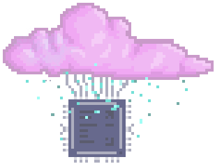
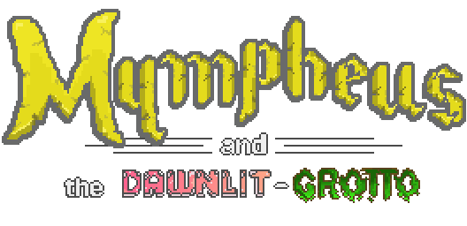

Uplinkx

Summary:
Better than a Github README page.
My craft is writing very detailed instructions that change
ones and zeros; I wanted a stage in which to display my work, this is the solution I came up with:
a website that shows rather than just says.
Log 00:
Specify the requirements you want: a website, highly customizable, with full ownership. This meant
I would have to write my own website, with a minimal layer to serve as the host, preferably with
as few constraints as possible.
Log 01:
Find a way to make a C program run in the web. This lead me to Emscripten, just follow
these
install instructions and
this
sanity check
(if you use sdl_ttf2 you may get errors, my fix was to
downgrade emscripten to version 2.0.10 which
surprisingly worked)
Log 02:
Luckily I had a few projects to port and began getting them onto the web. These
projects were from my
ASSERT_game
series whose aims was to teach me what goes into making a game, and has me develop the tools
that would allow me to do so. From rendering pipelines using sprite structs to Xbox controller inputs,
I tried to create simple but varied projects to grow my expertise in software development and architecture.
Simple turn based loop in chess, real-time program in flappy bird, input and architecture in pacman, and quality
assurance in 2048.
During this time I brainstormed designs and was beginning to develop the personality I wanted the website to
have
through trial and error. The programs above however were not made with the intention of being played through the
web.
So I set out to create an applications that would be made with touch input from mobile in mind.
Log 03:

The next project would take would take all the dedication I had to make. If completed it would be the biggest
project
I had made to date. It would involve many different systems working together, a more detailed report
is found
here if you are curious by what I mean.
It
is so far the most complete game I have made and I encourage you to
play it.
Website's Source Code here